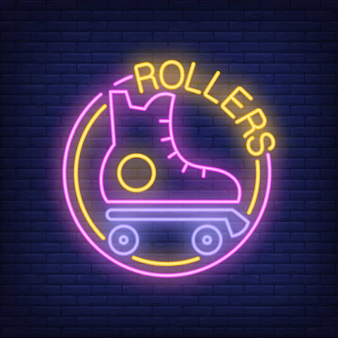

Famous Quotes
Here are some inspirational quotes about movement, perseverance, happiness, and enjoying the journey.

Keep Moving Forward
"It always seems impossible until it's done."
— Nelson Mandela
"The secret of getting ahead is getting started."
— Mark Twain
"Success is not final, failure is not fatal: it is the courage to continue that counts."
— Winston Churchill
Enjoy the Journey
"Life is like riding a bicycle. To keep your balance, you must keep moving."
— Albert Einstein
"The most wasted of days is one without laughter."
— E. E. Cummings